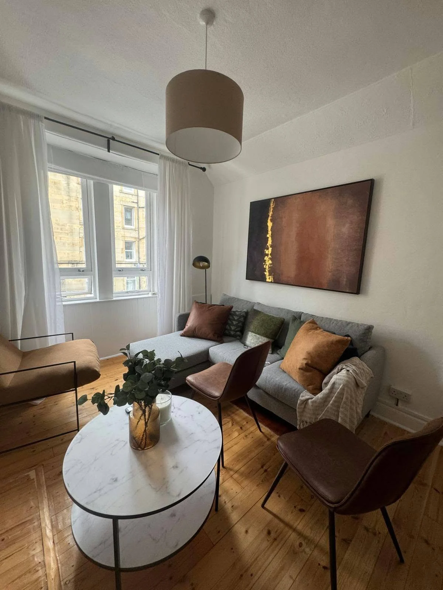
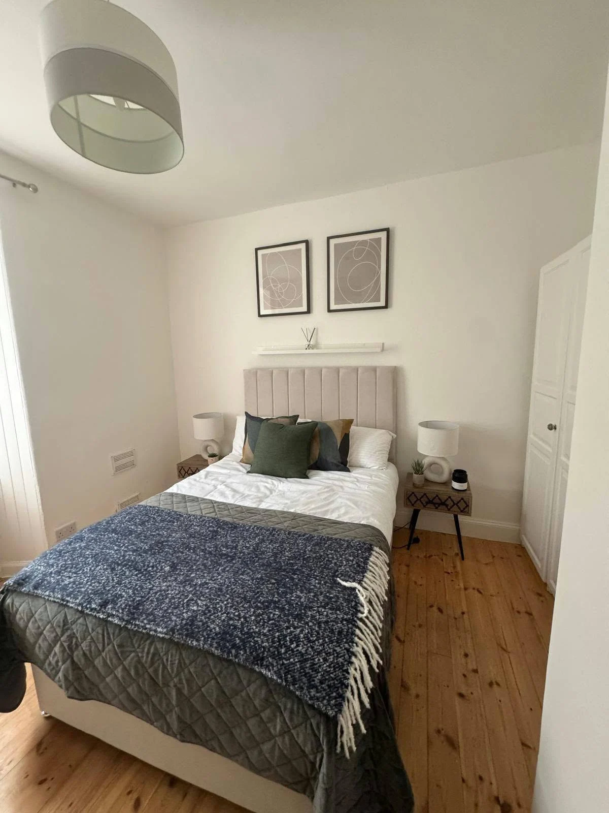
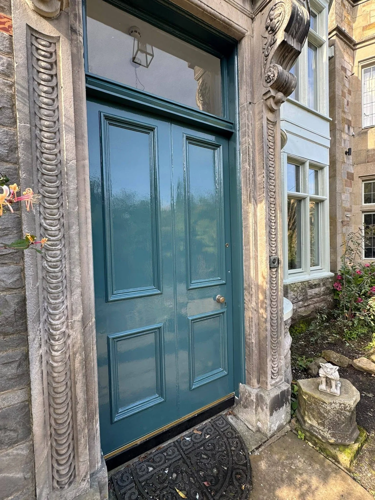

CITY DECORATORS LTD · EDINBURGH & PEEBLES
A fresh perspective.
A beautiful finish.
Thoughtful colour. Carefully finished details. Interior and exterior painting and decorating that brings new life to the spaces you call home.
Interior & exteriorPeriod detailsDoors & woodwork
WELCOME TO CITY DECORATORS
Your space.
A new sense of home.
The right colour palette can transform even a compact space. A fresh coat, a crisp edge and thoughtfully finished woodwork bring a room together.
City Decorators LTD works on interior and exterior decorating projects in Edinburgh and Peebles. Browse our project photographs, then tell us what you have in mind.
Let’s talk about your project →

FROM PREPARATION TO FINISH
A brighter welcome.
From the first step.
See this stairwell during preparation and after decorating. Fresh white walls frame the natural wood handrail and statement pendant lighting.
Tap a photograph to see the full image.
Explore interior decorating →OUR SERVICES
Fresh colour.
Inside and out.
From walls and ceilings to the finer details of your home.
Interior decorating
Painting and decorating for rooms, hallways and staircases in Edinburgh and Peebles.
Explore this service →Exterior decorating
Exterior painting and decorating for homes in Edinburgh, Peebles and surrounding areas.
Explore this service →Period features
Decorating for ornate ceilings, cornices and characterful interiors.
Explore this service →Doors and woodwork
Painting for entrance doors, frames, stairwells and decorative woodwork.
Explore this service →OUR WORK
Real homes.
Fresh possibilities.
Interior refreshes, exterior finishes and intricate details. Tap any photograph for the complete view.
THE FINISHING TOUCH
A lighter landing.
A fresh start.
Preparation and the finished result, shown in the same landing. White walls and painted surrounds complement the natural timber doors and balustrade.
Discuss your space →EDINBURGH & PEEBLES
A fresh finish, closer to home.
Contact City Decorators LTD with your postcode to discuss your project and availability in your area.
EdinburghPeeblesInterior decoratingExterior decorating
Follow @citydecorators_ on Instagram ↗BEFORE WE GET STARTED
A few useful answers.
What decorating work can I enquire about?
Interior and exterior painting and decorating, including walls, ceilings, period details, doors and woodwork.
Which areas do you cover?
Enquiries are welcome from Edinburgh and Peebles. Send your postcode to discuss availability and travel for your project.
What should I send for a quote?
Your postcode, photographs of the space, the surfaces involved and the colours or finish you have in mind.
Can I view the full project photographs?
Yes. Tap any gallery photograph to enlarge it without cropping.
LET’S TALK ABOUT YOUR PROJECT
Your ideas.
Our attention to detail.
Send photographs, your postcode and a few details about the work you have in mind. Get in touch to discuss a quote.
Or email
enquiries@citydecorators.info
CITY DECORATORS · EDINBURGH & PEEBLES
A fresh finish.
A home to be proud of.
Tell us about your painting and decorating plans.